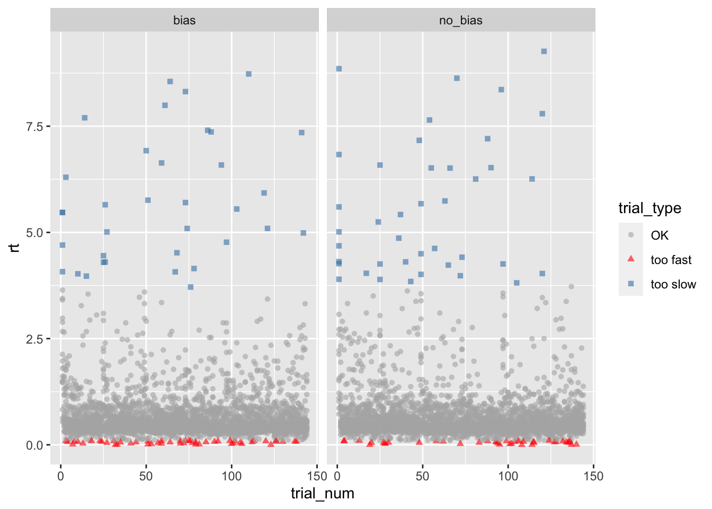
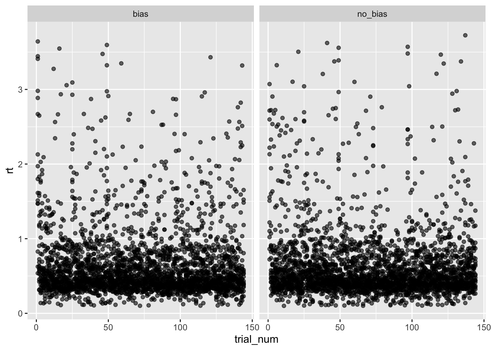

Übung 3: Lösung
Daten importieren und bereinigen.
![]()
Aufgabenstellung
In dieser Aufgabe bearbeiten Sie Daten aus einem Detektionssexperiment. Versuchspersonen mussten in zwei Bedingungen (bias und no_bias) ein Signal, welches in Rauschen eingebettet war, detektieren. Im Datensatz sind folgende Variablen:
subject: Subjekt ID
trial_num: Trialnummer, durchnummeriert in jeder Bedingung
condition: Bedingung (_Bias_ und _No Bias_)
signal_present: Indikatorvariable für Signal (0: absent, 1: present)
correct: Indikatorvariable für korrekte Antwort (0: incorrekt, 1: correct)
rt: Reaktionszeit in Sekunden
Aufgaben
Aufgabe 1
Speichern Sie das CSV File in Ihren Projektordner.
Lesen Sie das CSV File ein. Per Konvention verwenden wir den Variablennamen
dfür den Datensatz.Überprüfen Sie, ob alle Variablen vorhanden sind. Verwenden Sie z.B. die Funktion
glimpse().Konvertieren Sie die Gruppierungsvariablen
subjectundconditionzu Faktoren.
d <- read_csv("data/data-exercise-03.csv")Schauen Sie sich die Variablen an:
glimpse(d)Rows: 5,756
Columns: 6
$ subject <dbl> 2, 2, 2, 2, 2, 2, 2, 2, 2, 2, 2, 2, 2, 2, 2, 2, 2, 2, 2…
$ condition <chr> "bias", "bias", "bias", "bias", "bias", "bias", "bias",…
$ signal_present <dbl> 0, 0, 1, 1, 0, 1, 1, 1, 1, 1, 0, 0, 0, 1, 1, 1, 1, 0, 0…
$ correct <dbl> 1, 0, 1, 1, 1, 1, 1, 1, 1, 1, 1, 1, 1, 0, 1, 1, 1, 1, 1…
$ rt <dbl> 4.076, 1.167, 0.598, 0.375, 0.454, 0.410, 0.370, 0.559,…
$ trial_num <dbl> 1, 2, 3, 4, 5, 6, 7, 8, 9, 10, 11, 12, 13, 14, 15, 16, …Konvertieren Sie die Gruppierungsvariablen zu Faktoren:
Aufgabe 2
Gibt es Versuchspersonen die in einer der Bedingungen Reaktionszeiten hat, welche mehr als zwei Standardabweichungen über dem Bedingungsmittelwert liegen?
# A tibble: 0 × 6
# Groups: subject [0]
# … with 6 variables: subject <fct>, condition <fct>, mean_P <dbl>,
# mean_C <dbl>, sd_C <dbl>, outlier_P <lgl>Es gibt keine Versuchsperson, deren mittlere Reaktionszeit in einer Bedingung mehr als zwei Standardabweichungen über dem Bedingungsmittelwert liegt. Dies bedeutet, dass sich in excluded keine Personen befinden, und der Dataframe folglich \(0\) Zeilen hat.
excluded <- sum_stats_participants |>
filter(outlier_P == 1)
excluded# A tibble: 0 × 6
# Groups: subject [0]
# … with 6 variables: subject <fct>, condition <fct>, mean_P <dbl>,
# mean_C <dbl>, sd_C <dbl>, outlier_P <lgl>Der nächste Schritt wäre also nicht unbedingt notwendig.
Aufgabe 3
Gibt es einzelne Trials, in denen Versuchpersonen länger als 4 Standardabweichungen über dem Bedingungsmittelwert gebraucht haben, um zu Antworten?
Gibt es einzelne Trials, in denen Versuchpersonen zu schnell (unter 100 ms) geantwortet haben?
Speichern Sie den bearbeiteten Datensatz als CSV File.
Zu Aufgabe 3.a)
Wir wollen Trials identifizieren, bei denen Vpn länger gebraucht haben, als 4 Standardabweichungen über dem Bedingungsmittelwert. Das bedeutet (rt - mean_C) > 4 * sd_C, und nicht abs(rt - mean_C) > 4 * sd_C. Letzteres würde auch Trials als Ausreisser identifizieren, welche 4 Standardabweichungen unter dem Bedingungsmittelwert liegen.
Zu Aufgabe 3.b)
Die Reaktionszeiten sind hier in Sekunden, nicht Millisekunden. Dies bedeutet, wir brauchen rt < 0.100, und nicht rt < 100.
d_cleaned |>
ggplot(aes(x = trial_num, y = rt, color = trial_type, shape = trial_type)) +
geom_point(alpha = 0.6) +
facet_grid(~condition) +
scale_color_manual(values = c("gray70", "red", "steelblue"))
d_cleaned |>
filter(trial_type != "OK")# A tibble: 165 × 9
subject condition signal_present correct rt trial_…¹ mean_C sd_C trial…²
<fct> <fct> <dbl> <dbl> <dbl> <dbl> <dbl> <dbl> <fct>
1 2 bias 0 1 4.08 1 0.697 0.751 too sl…
2 2 bias 1 1 0.035 41 0.697 0.751 too fa…
3 2 bias 0 1 6.92 50 0.697 0.751 too sl…
4 2 bias 0 1 0.085 51 0.697 0.751 too fa…
5 2 bias 0 1 0.033 70 0.697 0.751 too fa…
6 2 bias 0 1 5.09 74 0.697 0.751 too sl…
7 2 bias 0 1 6.59 94 0.697 0.751 too sl…
8 2 bias 0 1 5.09 121 0.697 0.751 too sl…
9 2 bias 1 1 0.077 138 0.697 0.751 too fa…
10 3 no_bias 1 0 0.0958 4 0.691 0.773 too fa…
# … with 155 more rows, and abbreviated variable names ¹trial_num, ²trial_typeVor dem Entfernen der Ausreisser Trials haben wir 5756 Datenpunkte.
nrow(d_cleaned)[1] 5756Nach dem Entfernen haben wir noch 5591.
nrow(d_cleaned)[1] 5591d_cleaned |>
ggplot(aes(x = trial_num, y = rt)) +
geom_point(alpha = 0.6) +
facet_grid(~condition) +
scale_color_manual(values = c("gray70", "red", "steelblue"))
d_cleaned |> write_csv("data/data-cleaned.csv")Reuse
Citation
@online{ellis2022,
author = {Andrew Ellis},
title = {Übung 3: {Lösung}},
date = {2022-04-03},
url = {https://kogpsy.github.io/neuroscicomplabFS23//solution_03.html},
langid = {en}
}